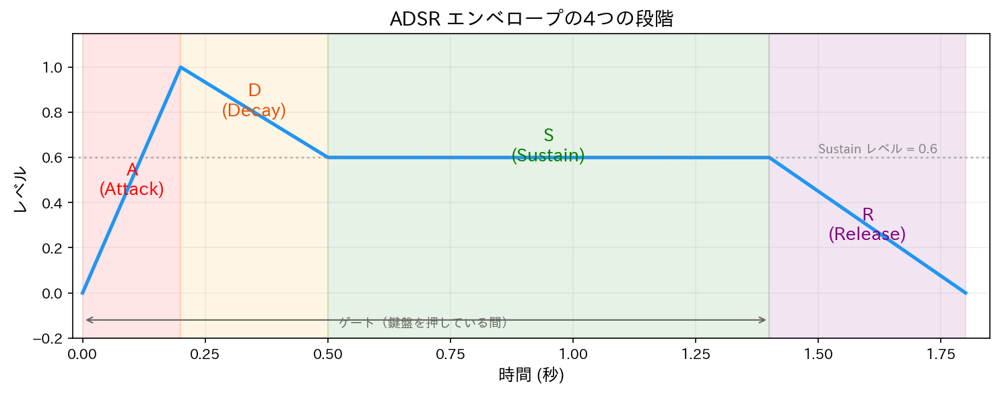
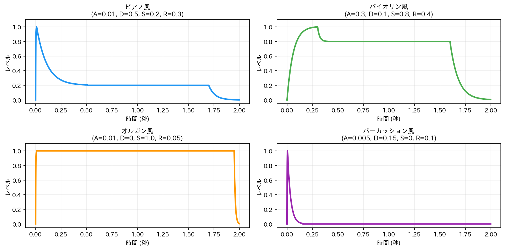
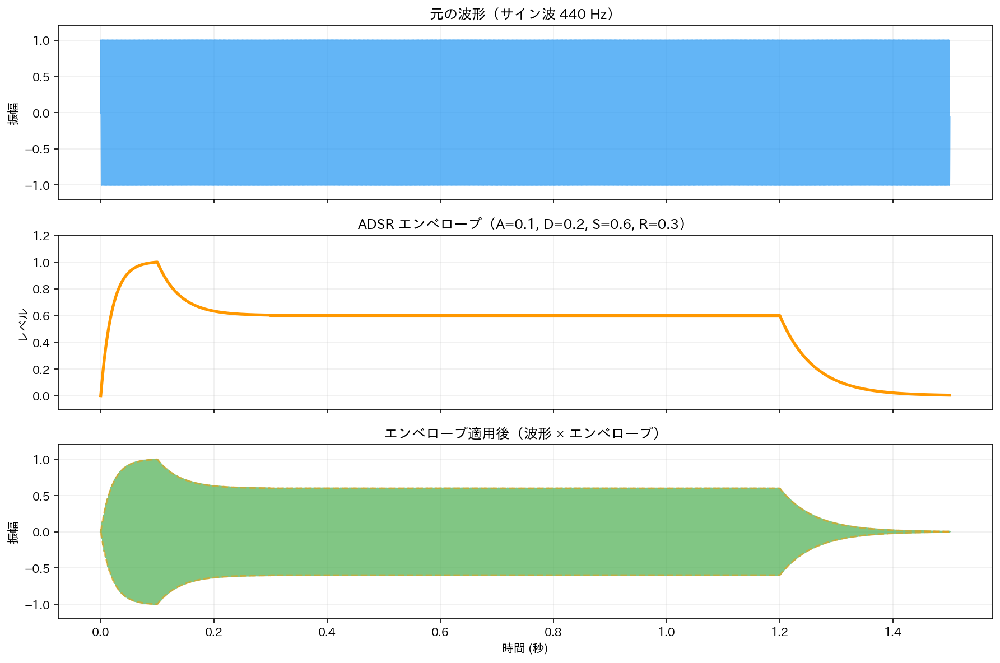
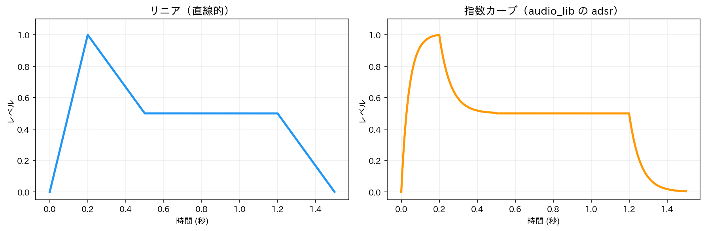

Lesson 8: エンベロープ（ADSR）¶
このレッスンで学ぶこと¶
- エンベロープの概念を理解する
- ADSR（Attack, Decay, Sustain, Release）の4つの段階を学ぶ
- Python でエンベロープを音に適用し、表情をつける体験をする
- エンベロープを自分で実装して仕組みを理解する
- エンベロープの違いが音の印象にどう影響するかを体験する
Lesson 7 では Sonic Pi でスケールやコードを使ってメロディを鳴らしました。しかし、これまで鳴らしてきた音には共通の問題があります——音が突然始まり、突然終わるのです。現実の楽器の音はそうではありません。ピアノの音は鍵盤を叩いた瞬間に最大音量に達し、すぐに減衰しますが、鍵盤を押さえている間はかすかに鳴り続けます。バイオリンは弓を弦に当ててからゆっくり音量が上がります。この「音量の時間変化」をエンベロープ（envelope）と呼びます。
8.1 なぜエンベロープが必要なのか¶
突然始まる音の問題¶
Lesson 1 で作ったサイン波を思い出してください。
import numpy as np
from IPython.display import display
from audio_lib import sine_wave, AudioSignal
from audio_lib.notebook import play_sound
# 0.5秒のサイン波（エンベロープなし）
sig = sine_wave(440, 0.5)
display(play_sound(sig, "サイン波（エンベロープなし）"))
この音は0秒の時点でいきなり最大振幅になり、0.5秒の時点でいきなりゼロになります。これは「プチッ」というクリックノイズの原因にもなりますし、何より不自然です。
楽器の音はどう変化するか¶
現実の楽器では、音量は時間とともに特徴的なパターンで変化します。
- ピアノ: 鍵盤を叩いた瞬間に最大音量 → すぐに減衰 → 鍵盤を離すと消える
- バイオリン: ゆっくり立ち上がる → 弓の圧力で音量を維持 → 弓を離すとゆっくり消える
- オルガン: 鍵盤を押すとすぐ一定音量 → 鍵盤を離すとすぐ消える
- トランペット: 息を吹き込むと素早く立ち上がる → 吹き続ける間は一定 → ゆっくり消える
この音量の時間変化のパターンこそが、楽器ごとの「表情」を決める大きな要因です。同じ周波数・同じ波形でも、エンベロープが違えば別の楽器に聞こえることがあります。
8.2 ADSR エンベロープ¶
エンベロープを体系的に扱うために、ADSR という4つの段階に分ける方法が広く使われています。
4つの段階¶
| 段階 | 英語 | 説明 |
|---|---|---|
| A | Attack（アタック） | 音の立ち上がり。音量が 0 から最大値まで上がる時間 |
| D | Decay（ディケイ） | 最大値からサステインレベルまで下がる時間 |
| S | Sustain（サステイン） | 鍵盤を押している間の音量レベル（時間ではなくレベル） |
| R | Release（リリース） | 鍵盤を離してから音が消えるまでの時間 |

重要なポイント: A, D, R は時間（秒）で指定しますが、S はレベル（0.0〜1.0）で指定します。サステインだけが他と性質が異なるので注意してください。
ゲートとエンベロープの関係¶
ADSR エンベロープには「ゲート」（gate）という概念があります。ゲートは鍵盤を「押している間」に相当します。
- ゲートが開く（鍵盤を押す）→ Attack → Decay → Sustain を維持
- ゲートが閉じる（鍵盤を離す）→ Release が始まる
サステインの持続時間はゲートの長さで決まります。ゲートが短ければスタッカート（短い音）、長ければレガート（長い音）になります。
8.3 エンベロープを音に適用する¶
まずは audio_lib の adsr 関数を使って、エンベロープの効果を体験しましょう。
from audio_lib import adsr, sine_wave, AudioSignal
from audio_lib.notebook import play_sound
from IPython.display import display
# ADSR エンベロープを生成
# duration は波形と同じ長さにする（内部で gate_time = duration - release として計算される）
dur = 1.5
env = adsr(dur, attack=0.1, decay=0.2, sustain=0.6, release=0.3)
# サイン波を生成（エンベロープと同じ長さ）
wave = sine_wave(440, dur)
# 波形 × エンベロープ（要素ごとの掛け算）
shaped = AudioSignal(wave.data * env.data, 44100)
エンベロープを音に適用するには、波形の各サンプルにエンベロープの値を掛けます。これだけです。duration は本来 ADSR のパラメータではありませんが、事前に配列として生成するために全体の長さを指定する必要があります。波形とエンベロープの duration は同じ値にします。聞き比べてみましょう。
エンベロープをかけた音は、立ち上がりがあり、自然に減衰し、なめらかに消えます。クリックノイズもなくなっています。
さまざまな楽器のエンベロープ¶
ADSR のパラメータを変えることで、さまざまな楽器の特徴を模倣できます。
from audio_lib import sawtooth_wave
dur = 2.0
freq = 262 # C4
# ピアノ: 瞬間的な立ち上がり、長い減衰
env_piano = adsr(dur, attack=0.01, decay=0.5, sustain=0.2, release=0.3)
wave_piano = sawtooth_wave(freq, dur)
piano = AudioSignal(wave_piano.data * env_piano.data, 44100)
display(play_sound(piano, "ピアノ風（A=0.01, D=0.5, S=0.2, R=0.3）"))
# バイオリン: ゆっくり立ち上がり、高いサステイン
env_violin = adsr(dur, attack=0.3, decay=0.1, sustain=0.8, release=0.4)
wave_violin = sawtooth_wave(freq, dur)
violin = AudioSignal(wave_violin.data * env_violin.data, 44100)
display(play_sound(violin, "バイオリン風（A=0.3, D=0.1, S=0.8, R=0.4）"))
# オルガン: 素早い立ち上がり、サステインが最大
env_organ = adsr(dur, attack=0.01, decay=0.0, sustain=1.0, release=0.05)
wave_organ = sawtooth_wave(freq, dur)
organ = AudioSignal(wave_organ.data * env_organ.data, 44100)
display(play_sound(organ, "オルガン風（A=0.01, D=0, S=1.0, R=0.05）"))
# パーカッション: 瞬間的な立ち上がりと急速な減衰、サステインなし
env_perc = adsr(dur, attack=0.005, decay=0.15, sustain=0.0, release=0.1)
wave_perc = sine_wave(freq, dur)
perc = AudioSignal(wave_perc.data * env_perc.data, 44100)
display(play_sound(perc, "パーカッション風（A=0.005, D=0.15, S=0, R=0.1）"))
同じ周波数・同じ波形でも、ADSR のパラメータだけでまったく違う楽器に聞こえることが体験できます。
エンベロープの比較¶
4つのエンベロープを並べて比較しましょう。
import matplotlib.pyplot as plt
fig, axes = plt.subplots(2, 2, figsize=(12, 6))
envelopes = [
("ピアノ風", env_piano),
("バイオリン風", env_violin),
("オルガン風", env_organ),
("パーカッション風", env_perc),
]
for ax, (name, env) in zip(axes.flat, envelopes):
t = np.arange(len(env.data)) / 44100
ax.plot(t, env.data, linewidth=2)
ax.set_title(name)
ax.set_ylim(-0.05, 1.1)
ax.set_xlabel("時間 (秒)")
ax.set_ylabel("レベル")
ax.grid(True, alpha=0.3)
plt.tight_layout()
plt.show()

8.4 波形とエンベロープの関係を可視化する¶
エンベロープが波形にどう作用するかを見てみましょう。
dur = 1.5
wave = sine_wave(440, dur)
env = adsr(dur, attack=0.1, decay=0.2, sustain=0.6, release=0.3)
shaped = AudioSignal(wave.data * env.data, 44100)
fig, axes = plt.subplots(3, 1, figsize=(12, 8), sharex=True)
t = np.arange(len(wave.data)) / 44100
# 元の波形
axes[0].plot(t, wave.data, alpha=0.7)
axes[0].set_ylabel("振幅")
axes[0].set_title("元の波形（サイン波）")
axes[0].set_ylim(-1.2, 1.2)
# エンベロープ
axes[1].plot(t, env.data, color='orange', linewidth=2)
axes[1].set_ylabel("レベル")
axes[1].set_title("ADSR エンベロープ")
axes[1].set_ylim(-0.1, 1.2)
# エンベロープ適用後
axes[2].plot(t, shaped.data, alpha=0.7, color='green')
axes[2].plot(t, env.data, color='orange', linewidth=1, linestyle='--', alpha=0.5)
axes[2].plot(t, -env.data, color='orange', linewidth=1, linestyle='--', alpha=0.5)
axes[2].set_ylabel("振幅")
axes[2].set_xlabel("時間 (秒)")
axes[2].set_title("エンベロープ適用後")
axes[2].set_ylim(-1.2, 1.2)
for ax in axes:
ax.grid(True, alpha=0.3)
plt.tight_layout()
plt.show()

エンベロープは波形の「振幅の包絡線」です。英語の envelope（封筒）という名前は、エンベロープが波形を「包み込む」形になることに由来します（図8.2 下段の破線）。
8.5 エンベロープでメロディを鳴らす¶
エンベロープを使って、ドレミファソラシドに表情をつけてみましょう。
from audio_lib import note_to_frequency
c_major = [60, 62, 64, 65, 67, 69, 71, 72]
dur_note = 0.5 # 各音の長さ
parts = []
for midi_num in c_major:
freq = note_to_frequency(midi_num)
wave = sine_wave(freq, dur_note)
env = adsr(dur_note, attack=0.02, decay=0.1, sustain=0.6, release=0.1)
shaped = AudioSignal(wave.data * env.data, 44100)
parts.append(shaped.data)
scale_signal = AudioSignal(np.concatenate(parts), 44100)
display(play_sound(scale_signal, "C メジャースケール（ADSR あり）"))
Lesson 6 で作ったエンベロープなしの版と聞き比べてみてください。エンベロープをかけるだけで、ずっと自然な音になります。
波形を変えてみる¶
parts_saw = []
for midi_num in c_major:
freq = note_to_frequency(midi_num)
wave = sawtooth_wave(freq, dur_note)
env = adsr(dur_note, attack=0.01, decay=0.15, sustain=0.4, release=0.1)
shaped = AudioSignal(wave.data * env.data, 44100)
parts_saw.append(shaped.data)
scale_saw = AudioSignal(np.concatenate(parts_saw), 44100)
display(play_sound(scale_saw, "C メジャースケール（ノコギリ波 + ADSR）"))
ノコギリ波にピアノ風のエンベロープ（短いアタック、適度なディケイ）をかけると、シンセサイザーのピアノ音色に近い音が得られます。
8.6 エンベロープの仕組みを理解する — 自分で実装してみよう¶
ここまで audio_lib の adsr 関数を使ってきましたが、エンベロープの中身はどうなっているのでしょうか。最もシンプルな直線的（リニア）な ADSR エンベロープを自分で実装してみましょう。
def make_adsr_linear(duration, attack, decay, sustain, release,
sample_rate=44100):
"""直線的な ADSR エンベロープを生成"""
num_samples = int(sample_rate * duration)
gate_time = duration - release # ゲートが開いている時間
envelope = np.zeros(num_samples)
for i in range(num_samples):
t = i / sample_rate
if t < attack:
# Attack: 0 → 1（直線的に上昇）
envelope[i] = t / attack
elif t < attack + decay:
# Decay: 1 → sustain（直線的に下降）
envelope[i] = 1.0 - (1.0 - sustain) * (t - attack) / decay
elif t < gate_time:
# Sustain: sustain レベルを維持
envelope[i] = sustain
else:
# Release: sustain → 0（直線的に下降）
elapsed = t - gate_time
if elapsed < release:
envelope[i] = sustain * (1.0 - elapsed / release)
return AudioSignal(envelope, sample_rate)
コードの構造は 8.2 節の ADSR の定義そのままです。時刻 t がどの段階にあるかを if-elif で判定し、各段階の式で振幅を計算しています。
可視化して確認する¶
env = make_adsr_linear(1.5, attack=0.1, decay=0.2, sustain=0.6, release=0.3)
plt.figure(figsize=(10, 4))
t = np.arange(len(env.data)) / 44100
plt.plot(t, env.data)
plt.xlabel("時間 (秒)")
plt.ylabel("振幅")
plt.title("ADSR エンベロープ（リニア・自作）")
plt.grid(True, alpha=0.3)
# 各段階にラベルをつける
plt.annotate("Attack", xy=(0.05, 0.5), fontsize=12, ha='center')
plt.annotate("Decay", xy=(0.2, 0.85), fontsize=12, ha='center')
plt.annotate("Sustain", xy=(0.7, 0.65), fontsize=12, ha='center')
plt.annotate("Release", xy=(1.35, 0.3), fontsize=12, ha='center')
plt.tight_layout()
plt.show()
直線で構成された折れ線グラフが表示されます。8.2 節の図と見比べて、Attack → Decay → Sustain → Release の4段階が実装できていることを確認してください。この直線的な形と、audio_lib の adsr が生成するカーブの違いは、次の 8.7 節で並べて比較します。
音にして聞いてみる¶
wave = sine_wave(440, 1.5)
env_lin = make_adsr_linear(1.5, attack=0.1, decay=0.2, sustain=0.6, release=0.3)
shaped_lin = AudioSignal(wave.data * env_lin.data, 44100)
display(play_sound(shaped_lin, "自作リニアエンベロープ"))
8.3 節で audio_lib の adsr を使ったときと似た結果になりますが、よく聞くと微妙に違います。その違いの正体を次の節で見ていきましょう。
8.7 リニア vs 指数カーブ¶
自作の make_adsr_linear と audio_lib の adsr を同じパラメータで比較します。
dur = 1.5
env_linear = make_adsr_linear(dur, attack=0.2, decay=0.3, sustain=0.5, release=0.3)
env_exp = adsr(dur, attack=0.2, decay=0.3, sustain=0.5, release=0.3)
fig, axes = plt.subplots(1, 2, figsize=(12, 4))
t_lin = np.arange(len(env_linear.data)) / 44100
t_exp = np.arange(len(env_exp.data)) / 44100
axes[0].plot(t_lin, env_linear.data, linewidth=2)
axes[0].set_title("リニア（直線的・自作）")
axes[0].set_xlabel("時間 (秒)")
axes[0].set_ylabel("レベル")
axes[0].set_ylim(-0.05, 1.1)
axes[0].grid(True, alpha=0.3)
axes[1].plot(t_exp, env_exp.data, linewidth=2, color='orange')
axes[1].set_title("指数カーブ（audio_lib）")
axes[1].set_xlabel("時間 (秒)")
axes[1].set_ylabel("レベル")
axes[1].set_ylim(-0.05, 1.1)
axes[1].grid(True, alpha=0.3)
plt.tight_layout()
plt.show()

指数カーブはアタックの初動が速く、ディケイとリリースが最初は急速に下がってから緩やかになります。これは実際の楽器やアナログシンセサイザーの挙動に近く、より自然な音の変化になります。
聞き比べてみよう¶
wave = sawtooth_wave(440, dur)
shaped_lin = AudioSignal(wave.data * env_linear.data, 44100)
shaped_exp = AudioSignal(wave.data * env_exp.data, 44100)
display(play_sound(shaped_lin, "リニアエンベロープ"))
display(play_sound(shaped_exp, "指数カーブエンベロープ"))
特にリリース（音の消え際）の違いに注目してください。リニアでは一定の速さで消えますが、指数カーブでは最初に素早く減衰し、余韻がゆっくり消えます。
なぜ指数カーブが自然なのか¶
人間の聴覚は音量の変化を対数的に感じます。直線的な変化では、減衰の最初の部分が遅く感じられ、最後が急に感じられます。指数カーブは最初に素早く変化し、その後ゆっくり変化するため、聴覚的に均一な変化に感じられるのです。
8.8 エンベロープのパラメータと音の印象¶
ADSR の各パラメータが音の印象にどう影響するかをまとめます。
| パラメータ | 短い/小さい | 長い/大きい |
|---|---|---|
| Attack | 打楽器的、鋭い | 弦楽器的、柔らかい |
| Decay | ディケイなし（アタック→サステインが直結） | 減衰が長い（ピアノ的） |
| Sustain | パーカッション的（音がすぐ消える） | 管楽器的（安定して鳴り続ける） |
| Release | 音が即座に止まる（スタッカート的） | 余韻が残る（ペダルを踏んだピアノ的） |
まとめ¶
このレッスンで学んだことを整理します。
| 概念 | 内容 |
|---|---|
| エンベロープ | 音量の時間変化。音の「表情」を決める |
| ADSR | Attack, Decay, Sustain, Release の4段階 |
| Attack | 音の立ち上がり時間 |
| Decay | 最大音量からサステインレベルまでの減衰時間 |
| Sustain | 鍵盤を押し続けている間の音量レベル（時間ではない） |
| Release | 鍵盤を離してから音が消えるまでの時間 |
| ゲート | 鍵盤を押している時間。サステインの持続を決める |
| リニア vs 指数 | 指数カーブのほうが聴覚的に自然 |
使った audio_lib の関数¶
| 関数 | 役割 |
|---|---|
adsr(duration, attack, decay, sustain, release) |
ADSR エンベロープを生成（指数カーブ） |
Lesson 7 との対応¶
| Lesson 7（Sonic Pi） | Lesson 8（Python） |
|---|---|
play :c4（音が突然始まり突然終わる） |
エンベロープなしの波形が不自然な理由を理解 |
| Sonic Pi がデフォルトで適用するエンベロープ | ADSR の仕組みを自分で実装して理解 |
Lesson 10 で attack:, release: を学ぶ |
その理論的基礎をここで準備 |
次回予告¶
Lesson 9 では エフェクトの原理 を学びます。リバーブ、ディレイ、コーラスなどのエフェクトがどのような仕組みで音を加工しているかを Python で理解します。